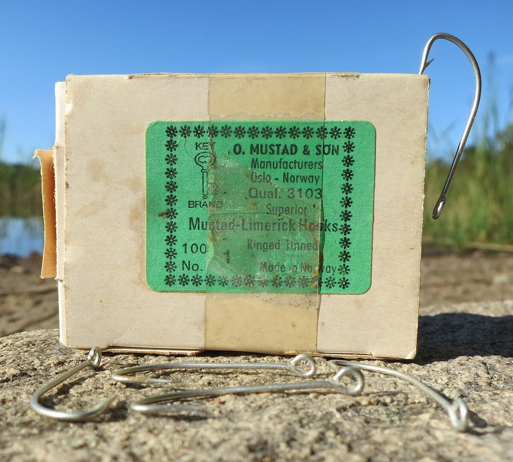

Haczyki — najważniejszy element całego zestawu
Anatomia haka
Każdy haczyk składa się z kilku elementów, które warto rozróżniać. Grot (ostrze) decyduje o wbiciu; zadzior tuż za grotem ma utrzymać hak w pysku ryby. Łuk i kolanko nadają hakowi kształt i wpływają na siłę zacięcia, trzon (proste ramię) bywa krótszy lub dłuższy zależnie od przeznaczenia, a zakończenie ma postać spłaszczonej łopatki (do wiązania na żyłce) albo oczka (do przewlekania przyponu). Łopatka jest lżejsza i smuklejsza, ceniona w wędkarstwie spławikowym; oczko jest uniwersalne i wygodne przy grubszych żyłkach oraz przyponach z plecionki.
Rozmiary i numeracja
Numeracja haków bywa myląca, bo działa w dwóch przeciwnych kierunkach. W zakresie typowym dla ryby białej obowiązuje zasada: im większa liczba, tym mniejszy hak — numer 20–24 to drobiazg pod ochotkę czy pojedynczą larwę, a numer 8–6 to już solidny hak pod większą przynętę roślinną lub robaka. Powyżej numeru 1 skala przechodzi w oznaczenia z barwą „/0" (1/0, 2/0, 4/0, 6/0) i tutaj jest odwrotnie: im wyższa liczba, tym większy i mocniejszy hak — to rozmiary karpiowe, sumowe i morskie. Rozmiar dobiera się przede wszystkim do wielkości przynęty i pyska ryby, a nie wyłącznie do planowanego gatunku.
Z zadziorem czy bezzadziorowe
Haki z zadziorem pewniej trzymają rybę podczas holu, ale ich usunięcie z pyska jest trudniejsze i bardziej inwazyjne. Haki bezzadziorowe (barbless) wypina się szybko i delikatnie, dzięki czemu ryba mniej cierpi, a wędkarz oszczędza czas — dlatego są standardem lub wręcz wymogiem na wielu łowiskach komercyjnych i przy łowieniu z zamiarem wypuszczenia. Zadzior na zwykłym haku można też po prostu zacisnąć szczypcami, uzyskując rozwiązanie pośrednie. Wbrew obawom bezzadziorowiec rzadko skutkuje spadami, jeśli tylko utrzymujemy stały napór linki podczas holu.
Haki karpiowe i metoda włosowa
W nowoczesnym karpiarstwie przynęta (kulka proteinowa, pellet) nie jest nadziewana na hak, lecz zawieszona pod nim na krótkim odcinku żyłki zwanym włosem (hair rig). Dzięki temu sam hak pozostaje odsłonięty i pewniej wbija się w wargę ryby. Popularne są wzory o szerokim rozwarciu (wide gape) oraz modele typu curve shank, których wygięty trzon zwiększa skuteczność samozacięcia z ciężkim obciążeniem. Haki karpiowe wykonuje się z grubszego, kutego drutu, często z powłoką teflonową ograniczającą połysk i korozję.
Haki spinningowe: kotwiczki i pojedyncze
Przynęty drapieżnikowe uzbraja się najczęściej w kotwiczki (trójramienne), które dobrze zacinają, ale mocniej kaleczą rybę i łatwiej zaczepiają o dno czy podbierak. Coraz częściej, zwłaszcza przy łowieniu z wypuszczaniem, zastępuje się je hakami pojedynczymi (single hooks) — w woblerach i wahadłówkach poprawiają one bezpieczeństwo ryby i ułatwiają wypinanie, kosztem nieco większej liczby pustych brań. W gumach standardem są główki jigowe i haki offsetowe z uzbrojeniem ukrytym w korpusie przynęty.
Ostrość i kontrola grotu
Tępy hak to najczęstsza, a zarazem najbardziej niedoceniana przyczyna pustych brań i spadów. Ostrość sprawdza się prostym testem paznokcia: dotknięty grotem paznieć powinien lekko „zaczepić", a nie ześlizgnąć się. Groty stępiają się o kamienie, muszle i twardy pysk ryby, dlatego haki kontroluje się regularnie i wymienia bez sentymentu — to najtańszy element zestawu, a jego stan przesądza o skuteczności. Drobne ostrza można doostrzyć specjalnym kamykiem lub pilniczkiem, ale po kilku zabiegach lepiej założyć nowy.
Krętliki, agrafki i łączniki
Po co stosować krętlik
Krętlik (swivel) to mały element z dwoma obrotowymi oczkami, który pozwala przynęcie lub zestawowi obracać się niezależnie od żyłki głównej. Bez niego skręty kumulują się na lince — przy obrotówkach i innych wirujących przynętach żyłka w kilkanaście minut zamienia się w sprężynę, traci wytrzymałość i plącze się przy każdym rzucie. Dobrej klasy krętlik ma gładko pracujące łożysko lub przegubowe oczko, które obraca się nawet pod obciążeniem.
Agrafko-krętliki w spinningu
Połączenie krętlika z agrafką (snap swivel) pozwala błyskawicznie wymieniać przynęty bez przewiązywania węzła. To wygoda doceniana zwłaszcza w aktywnym spinningu, gdy w ciągu wyprawy zmienia się przynęty kilkadziesiąt razy. Trzeba jednak pamiętać o umiarze: zbyt duża, ciężka agrafka potrafi zepsuć akcję małego woblera czy lekkiej wahadłówki. Do drobnych przynęt stosuje się więc miniaturowe agrafki lub bezpieczne łączniki o niskiej wadze, a do dużych jerków i głębokich woblerów — mocne klipsy zapinane.
Rozmiary i wytrzymałość
Krętliki numeruje się podobnie jak haki — im większa liczba, tym mniejszy element (np. rozmiar 12–14 to drobiazg do delikatnych zestawów, 1/0–4/0 to mocne krętliki morskie i karpiowe). Każdy producent podaje wytrzymałość na zerwanie (w kg lub lb); powinna ona mieć wyraźny zapas względem wytrzymałości żyłki, by łącznik nigdy nie był najsłabszym ogniwem. Niedoceniany szczegół: na lekkich zestawach zbyt duży krętlik dociąża zestaw i psuje prezentację, więc dobiera się go do skali łowienia, a nie „na zapas".
Przypony stalowe i klipsy w karpiu
Tam, gdzie zęby drapieżnika mogą przeciąć żyłkę (szczupak, rzadziej sandacz), stosuje się przypony z linki stalowej lub tytanowej albo z grubego fluorocarbonu. W karpiarstwie ważnym elementem bezpieczeństwa są klipsy do obciążenia typu „safety clip" — w razie urwania zestawu uwalniają ciężarek, dzięki czemu ryba zaczepiona o zgubiony zestaw nie ciągnie go za sobą i nie pływa uwięziona. To rozwiązanie, które warto stosować zawsze przy ciężkich gruntowych zestawach.
Spławiki, obciążenia i sygnalizatory brań
Typy spławików
Waggler montuje się tylko za dolne oczko i sprawdza się na wodzie stojącej oraz przy rzutach na dystans — daje stabilną, mało wrażliwą na wiatr prezentację. Stick (typu przelotowego mocowanego w kilku punktach) służy do prowadzenia zestawu w nurcie rzeki. Spławik przelotowy z otworem w korpusie używany jest w zestawach gruntowo-spławikowych i przy łowieniu na większej głębokości niż długość wędki. Nośność spławika podaje się w gramach i dobiera do masy obciążenia, które ma go zrównoważyć tak, by nad wodą sterczała jedynie cienka antenka.
Śruciny i ogniwa obciążenia
Klasyczne obciążenie spławikowe to śruciny — małe rozcinane kulki zaciskane na żyłce. Mają własną numerację (od dużych, jak SSG czy AAA, po drobne nr 8–13), a ich rozłożenie wzdłuż przyponu decyduje o tempie opadania przynęty i czułości zestawu. Skupienie ciężaru przy spławiku daje szybkie opadanie i mniej brań „w locie"; rozłożenie drobnych śrucin to delikatna, naturalna prezentacja na ryby ostrożne. Śruciny powinny się zaciskać bez nacinania żyłki, dlatego stosuje się miękki stop i zaciska je palcami lub specjalnym narzędziem.
Ołów czy alternatywy bezołowiowe
Tradycyjnie obciążenia odlewa się z ołowiu — taniego, ciężkiego i miękkiego metalu. Ze względu na jego toksyczność dla środowiska coraz więcej krajów ogranicza ołów w wędkarstwie, a w Unii Europejskiej trwają prace nad jego wycofywaniem. Pojawia się więc coraz więcej obciążeń bezołowiowych z cynku, stali czy tungstenu; ten ostatni jest gęstszy od ołowiu, więc pozwala na mniejsze, mniej widoczne ciężarki. W Polsce ołów jest wciąż dozwolony, ale przed wyjazdem za granicę lub na łowisko z własnym regulaminem warto sprawdzić lokalne zasady.
Sygnalizatory brań
W feederze rolę sygnalizatora pełni wymienna szczytówka wędki o dobranej do warunków sztywności — jej drgnięcie lub ugięcie zdradza branie. W gruncie i karpiu stosuje się dodatkowo sygnalizatory na podpórkach: mechaniczne swingery i hangery napinające żyłkę między kołowrotkiem a podpórką oraz elektroniczne sygnalizatory dźwiękowo-świetlne, które reagują na ruch żyłki i pozwalają obserwować kilka wędek naraz, także nocą. Elektroniczny zestaw bywa łączony z bezprzewodowym odbiornikiem przy stanowisku, co jest standardem w nocnym karpiarstwie.
Lądowanie i bezpieczna obsługa ryby
Podbierak i siatka
Podbierak pozwala bezpiecznie podebrać rybę bez ryzyka zerwania w ostatniej fazie holu i bez podnoszenia jej „na kiju". Kluczowa jest jakość siatki: najlepsza jest bezwęzłowa, miękka, gumowana, z gęstym oczkiem — nie przecina śluzu, nie łamie promieni płetw i rzadziej zaczepia haki. Twarde, węzełkowe siatki ze sznurka są tańsze, ale uszkadzają powłokę śluzową ryby, dlatego stopniowo się od nich odchodzi. Wielkość kosza dobiera się do spodziewanych ryb — do karpia i suma potrzebny jest duży, głęboki podbierak.
Mata i kołyska
Przy większych okazach, które mają wrócić do wody, mata karpiowa to absolutny standard — chroni rybę przed urazami, gdy leży na brzegu podczas wypinania haka czy ważenia. Do naprawdę dużych ryb stosuje się kołyski (cradle) z wysokimi burtami, które uniemożliwiają rybie „wybicie się" i upadek na twarde podłoże. Matę przed użyciem warto zmoczyć, a samą obsługę ryby prowadzić nisko nad podłożem i możliwie szybko, ograniczając czas poza wodą.
Siatka do przetrzymywania
Siatka, w której ryba czeka np. na zważenie czy zdjęcie, musi być przestronna i wykonana z miękkiego, bezwęzłowego materiału, a ryba nie powinna przebywać w niej długo ani w płytkiej, nagrzanej wodzie. Wymiary i samo dopuszczenie siatek do przetrzymywania regulują przepisy łowiska i regulamin PZW — na części wód są ograniczone lub zakazane, dlatego zawsze sprawdza się lokalne zasady przed użyciem.
Narzędzia i drobiazgi nad wodą
Wypinanie haka i cięcie linki
Szczypce z długimi ramionami lub peany (zaciskane kleszczyki) pozwalają wypiąć hak głęboko z pyska bez ranienia rąk i ryby — to podstawowe narzędzie bezpieczeństwa, zwłaszcza przy drapieżnikach z ostrymi zębami. Do przecinania plecionki zwykłe nożyczki się nie nadają; potrzebne są nożyczki lub obcinaczki o ząbkowanych ostrzach, które tną gładko, bez strzępienia. Warto mieć je przypięte do retraktora przy ubraniu, żeby nie zniknęły w trawie.
Akcesoria metodowe i pomocnicze
W karpiarstwie i feederze przydają się igły do kulek i pelletów (do przewlekania włosa), rozłączacz (stringer needle, baiting needle) oraz narzędzia do wiązania końcówek. Klips do żyłki na szpuli kołowrotka pozwala zablokować dystans rzutu, by trafiać w to samo miejsce; ten sam efekt daje zaznaczenie żyłki markerem lub stoperem. Drobiazgi takie jak gumowe stopery, koraliki ochronne, rurki antyplątaniowe i markery do oznaczania dystansu na szpuli to elementy, które realnie poprawiają precyzję i porządek w zestawie.
Pudełka, organizacja i transport
Pudełka i pojemniki
Oddzielne pudełka na gumy, woblery, haki i drobne akcesoria skracają czas nad wodą i zmniejszają ryzyko uszkodzenia przynęt. Woblery z kotwiczkami najlepiej trzymać w pudełkach z wyściółką lub przegródkami, by haki nie tępiły się wzajemnie. Gumy reagują z niektórymi tworzywami, dlatego przechowuje się je w oryginalnych opakowaniach lub pudełkach odpornych na zmiękczacze. Przypony i końcówki karpiowe wygodnie przechowuje się w specjalnych tubach i portfelach, które nie zaginają materiału.
Pokrowce, torby i transport
Pokrowce na wędki i tuby chronią blanki przed najczęstszą przyczyną uszkodzeń — przytrzaśnięciem czy nadepnięciem, nie zaś rybą. Torby i plecaki z modułowymi przegrodami porządkują drobny sprzęt, a wiadra (często z pokrywą-siedziskiem) służą zarówno do transportu zanęty i przynęt, jak i jako podręczne siedzisko. Sprzęt namokły po wyprawie warto rozłożyć do wyschnięcia, bo wilgoć w zamkniętej torbie sprzyja korozji haków i krętlików.
Bezpieczeństwo ryby i najczęstsze błędy
Co naprawdę zwiększa bezpieczeństwo ryby
Kilka tanich akcesoriów ma realny wpływ na przeżywalność wypuszczanych ryb: miękka, bezwęzłowa siatka podbieraka, mata lub kołyska pod większe okazy, szczypce do szybkiego wypinania haka oraz haki bezzadziorowe lub z zaciśniętym zadziorem. Równie ważne jest ograniczanie czasu, jaki ryba spędza poza wodą, oraz mokre dłonie przy jej dotykaniu, by nie zdzierać śluzu. Klipsy bezpieczne w zestawach gruntowych chronią rybę przed wleczeniem zgubionego obciążenia.
Najczęstsze błędy w doborze drobnicy
Najczęstszy błąd to oszczędzanie na haku — tępy lub źle dobrany rozmiarem hak psuje skuteczność całego, nawet drogiego zestawu. Drugi to przewymiarowane krętliki i agrafki, które dociążają lekką przynętę i psują jej pracę. Trzeci to twarda, węzełkowa siatka podbieraka kalecząca rybę. Czwarty to brak zapasu wytrzymałości na łącznikach, przez co najsłabszym ogniwem staje się przypadkowy element, a nie świadomie dobrana żyłka. Piąty to chaos w pudełkach — zardzewiałe, posklejane haki i potępione kotwiczki, które łatwo przeoczyć w nieuporządkowanym sprzęcie.
FAQ — najczęstsze pytania
Jak czytać rozmiary haczyków?
W skali numerowej im większa liczba, tym mniejszy hak — numer 20 to drobny haczyk pod ochotkę, numer 6 jest już spory. Powyżej numeru 1 numeracja przechodzi w skalę z barwą /0 (1/0, 2/0, 4/0…) i tu odwrotnie: im większa liczba przed /0, tym większy hak. Rozmiar dobiera się do wielkości przynęty i pyska ryby, nie tylko do gatunku.
Po co stosować krętlik?
Krętlik pozwala obracać się przynęcie lub zestawowi niezależnie od żyłki głównej, dzięki czemu skręty nie kumulują się na lince i nie tworzą plątaniny. Jest niezbędny przy obrotówkach, skrętnych przynętach i metodzie spławikowej w nurcie; jego brak szybko skutkuje poskręcaną, osłabioną żyłką.
Hak z zadziorem czy bezzadziorowy?
Haki bezzadziorowe (barbless) znacznie łatwiej i mniej inwazyjnie wypina się z pyska ryby, co ma znaczenie przy łowieniu z zamiarem wypuszczenia oraz na wielu łowiskach komercyjnych, które ich wymagają. Hak z zadziorem pewniej trzyma rybę podczas holu, ale trudniej go usunąć — zadzior można też zacisnąć szczypcami.
Czy ołów do wędkarstwa jest zakazany?
W Polsce ołowiane obciążenia są wciąż legalne, ale w wielu krajach i akwenach obowiązują ograniczenia, a w UE trwają prace nad wycofywaniem ołowiu. Coraz powszechniejsze są alternatywy bezołowiowe (cynk, stal, tungsten). Przed wyjazdem za granicę lub na łowisko z własnym regulaminem warto sprawdzić lokalne zasady.
Jaka siatka podbieraka jest bezpieczna dla ryby?
Najbezpieczniejsza jest siatka bezwęzłowa, miękka, z gęstym, gumowanym oczkiem — nie przecina śluzu i nie łamie promieni płetw, a haki rzadziej się w niej zaczepiają. Twarde, węzełkowe siatki ze sznurka są tańsze, ale uszkadzają śluz i łuski, dlatego odchodzi się od nich zwłaszcza przy łowieniu no-kill.
Źródła i weryfikacja
Treści są opisem praktycznych parametrów sprzętu i zasad bezpiecznej obsługi ryby, bez deklarowania konkretnych wyników połowu. Zakresy numeracji haków i krętlików, typy spławików oraz rodzaje obciążeń opracowano na podstawie ogólnodostępnej wiedzy wędkarskiej i kart katalogowych producentów akcesoriów. Parametry konkretnych modeli weryfikuj na stronach producentów, a dopuszczalność siatek do przetrzymywania, rodzaje obciążeń oraz inne ograniczenia metodyczne — w regulaminach łowisk i PZW oraz w przepisach obowiązujących w danym kraju.